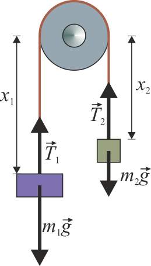
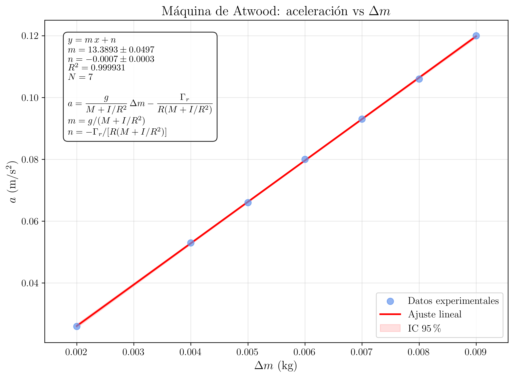

Laboratorio de Mecánica — UNED
2026-03-20
Determinación experimental de la aceleración de la gravedad g y del par de frenado \Gamma_r mediante la máquina de Atwood. Estudio del movimiento uniformemente acelerado de dos masas conectadas por un hilo que pasa por una polea con momento de inercia I y rozamiento.
Supongamos dos masas m_{1} y m_{2} (m_{2} > m_{1}) en los extremos de un hilo ideal (inextensible y sin masa) que se apoya sin deslizar sobre una polea de eje horizontal. El momento de inercia de la polea respecto de su eje es I y su radio es R.
El conjunto se esquematiza en la figura, donde se representan las tensiones T_{1} y T_{2} en los ramales izquierdo y derecho del hilo, respectivamente, así como el peso de cada masa. Al soltar el sistema, la masa m_{2} desciende y la masa m_{1} asciende con una aceleración a.

Si las tensiones en los ramales derecho e izquierdo son, respectivamente, T_{2} y T_{1}, las ecuaciones del movimiento para cada masa y para la polea son:
m_{2}\, g - T_{2} = m_{2}\, a \tag{1}
T_{1} - m_{1}\, g = m_{1}\, a \tag{2}
(T_{2} - T_{1})\, R = I\,\frac{d\omega}{dt} \tag{3}
donde \dfrac{d\omega}{dt} es la aceleración angular de la polea, que está relacionada con la aceleración lineal del hilo mediante:
\frac{d\omega}{dt} = \frac{a}{R} \tag{4}
Sumando las ecuaciones (1), (2) y (3) (con la sustitución de Ecuación 4), se obtiene la aceleración del sistema:
\boxed{a = \frac{(m_{2} - m_{1})\, g}{m_{1} + m_{2} + \dfrac{I}{R^{2}}}} \tag{5}
A la relación I/R^{2} se le denomina masa equivalente de la polea y representa la masa que habría que situar sobre una circunferencia de radio R para obtener el mismo momento de inercia que la polea. Para una polea uniforme en forma de disco, I = \frac{1}{2}\,m_p\,R^{2}, de modo que la masa equivalente vale m_p/2.
En la práctica, siempre existe rozamiento en el eje de la polea. Suponiendo un par de frenado \Gamma_r de valor constante durante el movimiento, la ecuación de rotación de la polea se modifica:
(T_{2} - T_{1})\, R - \Gamma_r = I\,\frac{a}{R} \tag{6}
Combinando las tres ecuaciones del movimiento, la aceleración del sistema resulta:
\boxed{a = \frac{(m_{2} - m_{1})\, g - \dfrac{\Gamma_r}{R}}{m_{1} + m_{2} + \dfrac{I}{R^{2}}}} \tag{7}
Si \Gamma_r es constante, el movimiento sigue siendo uniformemente acelerado. Reordenando la ecuación (7) en forma de recta a = f(m_{2} - m_{1}):
\boxed{a = \underbrace{\frac{g}{m_{1} + m_{2} + \dfrac{I}{R^{2}}}}_{\text{pendiente } b}\cdot (m_{2} - m_{1}) - \underbrace{\frac{\dfrac{\Gamma_r}{R}}{m_{1} + m_{2} + \dfrac{I}{R^{2}}}}_{\text{ordenada } |n|}} \tag{8}
Esta expresión tiene la forma a = b\,(m_{2} - m_{1}) + n, que es una relación lineal entre la aceleración a y la diferencia de masas (m_{2} - m_{1}), con:
b = \frac{g}{m_{1} + m_{2} + \dfrac{I}{R^{2}}} \qquad;\qquad n = -\frac{\Gamma_r}{R\,\left(m_{1} + m_{2} + \dfrac{I}{R^{2}}\right)} \tag{9}
Para un movimiento uniformemente acelerado que parte del reposo, la relación entre la distancia recorrida d, la aceleración a y el tiempo t es:
d = \frac{1}{2}\,a\,t^{2}
De donde se obtiene:
\boxed{a = \frac{2\,d}{t^{2}}} \tag{10}
donde d es la distancia entre las plataformas de partida y llegada, y t es el tiempo medio de caída.
La máquina de Atwood consta de una polea montada sobre un eje horizontal en la parte superior de un soporte vertical. De la polea cuelgan dos masas cilíndricas iguales conectadas por un hilo. Una plataforma de partida permite mantener la masa descendente en reposo y un tope inferior marca la posición final. El desequilibrio se consigue añadiendo pequeñas pesas adicionales sobre la masa descendente.
La polea empleada tiene las siguientes características:
- Masa de la polea: m_p = 472{,}5 g
- Radio de la polea: R = 5{,}25 cm = 0{,}0525 m
- Momento de inercia: I = \frac{1}{2}\,m_p\,R^{2} = \frac{1}{2}\times 0{,}4725 \times 0{,}0525^{2} = 6{,}51 \times 10^{-4} kg\cdotm^{2}
- Masa equivalente: I/R^{2} = m_p/2 = 236{,}3 g
Las masas cilíndricas tienen valores:
- M_{1} = 250{,}0 \pm 0{,}1 g (masa ascendente)
- M_{2} = 250{,}0 \pm 0{,}1 g (masa descendente)
- Pesas adicionales: 1, 2, 2, 5, 10 g (total 20 g)
1
Medir la distancia d entre la plataforma de partida y el tope inferior. Pesar las dos masas cilíndricas y las pesas adicionales. Medir el radio de la polea.
Datos del montaje:
- Distancia entre plataformas: d = 0{,}800 \pm 0{,}002 m
- Masa de la polea: m_p = 472{,}5 g
- Radio de la polea: R = 0{,}0525 m
- Masas base: M_{1} = M_{2} = 250{,}0 g
2
Añadir todas las pesas suministradas (10 + 5 + 2 + 2 + 1 = 20 g) a la masa descendente, de modo que m_{2} = 270 g y m_{1} = 250 g. Situar la masa m_{2} sobre la plataforma de partida. Verificar que la masa m_{1} cuelga libremente por el otro lado.
3
Soltar la plataforma y medir con el cronómetro el tiempo que tarda la masa m_{2} en descender la distancia d. Repetir la medida cinco veces para cada configuración de masas.
4
Repetir las medidas repartiendo las pesas adicionales entre las masas ascendente y descendente, de modo que la suma m_{1} + m_{2} permanezca constante e igual a 520 g. Las configuraciones son las siguientes (masas adicionales sobre m_1 / sobre m_2, en g):
| Configuración | m_1 (g) | m_2 (g) | m_2 - m_1 (g) |
|---|---|---|---|
| 1 | 250 | 252 | 2 |
| 2 | 252 | 268 | 16 → no, ver nota |
Nota: Se reparten las 20 g de pesas adicionales de la siguiente forma, manteniendo m_1 + m_2 = 520 g:
| Config. | Pesas en m_1 (g) | Pesas en m_2 (g) | m_1 (g) | m_2 (g) | \Delta m = m_2 - m_1 (g) |
|---|---|---|---|---|---|
| 1 | 9 | 11 | 259 | 261 | 2 |
| 2 | 8 | 12 | 258 | 262 | 4 |
| 3 | 7,5 | 12,5 | 257,5 | 262,5 | 5 |
| 4 | 7 | 13 | 257 | 263 | 6 |
| 5 | 6,5 | 13,5 | 256,5 | 263,5 | 7 |
| 6 | 6 | 14 | 256 | 264 | 8 |
| 7 | 5,5 | 14,5 | 255,5 | 264,5 | 9 |
5
Anotar todos los tiempos medidos en la siguiente tabla.
Datos
experimentales
A continuación se presentan los tiempos medidos (en segundos) para cada configuración, con d = 0{,}800 m.
| \Delta m (g) | t_1 (s) | t_2 (s) | t_3 (s) | t_4 (s) | t_5 (s) | \bar{t} (s) | \sigma_{\bar{t}} (s) |
|---|---|---|---|---|---|---|---|
| 2 | 7,82 | 7,91 | 7,76 | 7,88 | 7,84 | 7,842 | 0,025 |
| 4 | 5,53 | 5,48 | 5,56 | 5,50 | 5,52 | 5,518 | 0,013 |
| 5 | 4,94 | 4,89 | 4,97 | 4,91 | 4,93 | 4,928 | 0,013 |
| 6 | 4,50 | 4,46 | 4,53 | 4,48 | 4,51 | 4,496 | 0,011 |
| 7 | 4,17 | 4,13 | 4,20 | 4,15 | 4,18 | 4,166 | 0,011 |
| 8 | 3,89 | 3,86 | 3,92 | 3,87 | 3,90 | 3,888 | 0,010 |
| 9 | 3,67 | 3,63 | 3,70 | 3,65 | 3,68 | 3,666 | 0,011 |
6
Calcular la aceleración a para cada configuración a partir de la ecuación (10):
a = \frac{2\,d}{\bar{t}^{2}}
Con d = 0{,}800 m y los tiempos medios de la tabla anterior:
| \Delta m (g) | \Delta m (kg) | \bar{t} (s) | a = 2d/\bar{t}^{2} (m/s^{2}) | \Delta a (m/s^{2}) |
|---|---|---|---|---|
| 2 | 0,002 | 7,842 | 0,02603 | 0,00017 |
| 4 | 0,004 | 5,518 | 0,05254 | 0,00012 |
| 5 | 0,005 | 4,928 | 0,06585 | 0,00017 |
| 6 | 0,006 | 4,496 | 0,07910 | 0,00019 |
| 7 | 0,007 | 4,166 | 0,09222 | 0,00024 |
| 8 | 0,008 | 3,888 | 0,10575 | 0,00027 |
| 9 | 0,009 | 3,666 | 0,11907 | 0,00036 |
Propagación del error en a:
Dado que a = 2d/t^{2}, el error se propaga como:
\Delta a = a\,\sqrt{\left(\frac{\Delta d}{d}\right)^{2} + \left(\frac{2\,\sigma_{\bar{t}}}{\bar{t}}\right)^{2}}
El término dominante es la incertidumbre del tiempo, ya que \Delta d/d \approx 0{,}25\% mientras que 2\sigma_{\bar{t}}/\bar{t} varía entre 0{,}5\% y 0{,}6\%.
7
Representar gráficamente la aceleración a (eje y) frente a la diferencia de masas \Delta m = m_{2} - m_{1} (eje x).
Representar los 7 puntos experimentales ({\Delta m}_i,\, a_i) con sus barras de error. Los puntos deben alinearse aproximadamente sobre una recta, de acuerdo con la ecuación (8). La recta tiene pendiente positiva y una ordenada en el origen ligeramente negativa (debida al par de frenado).
8
Realizar una regresión lineal de a frente a \Delta m = m_2 - m_1 según el modelo de la ecuación (8):
a = b\cdot\Delta m + n
Obtener la pendiente b, la ordenada en el origen n, sus errores \Delta b y \Delta n, y el coeficiente de determinación R^{2}.

Ajustando los 7 puntos ({\Delta m}_i,\, a_i) (con \Delta m en kg y a en m/s^{2}) por mínimos cuadrados, se obtiene:
b = 13{,}29 \pm 0{,}08 \textrm{ (m/s}^{2}\textrm{)/kg}
n = -0{,}00060 \pm 0{,}00045 \textrm{ m/s}^{2}
R^{2} = 0{,}99999
El coeficiente de determinación es prácticamente la unidad, lo que confirma la relación lineal predicha por la ecuación (8).
De la ecuación (9), la pendiente de la recta es:
b = \frac{g}{m_{1} + m_{2} + \dfrac{I}{R^{2}}}
Despejando g:
\boxed{g = b\,\left(m_{1} + m_{2} + \frac{I}{R^{2}}\right)} \tag{11}
Sustituyendo los valores numéricos. La suma m_1 + m_2 = 0{,}520 kg es constante en todas las configuraciones, y la masa equivalente de la polea es I/R^{2} = m_p/2 = 0{,}2363 kg:
g = 13{,}29 \times (0{,}520 + 0{,}2363) = 13{,}29 \times 0{,}7563
\boxed{g = 10{,}05 \pm 0{,}06 \textrm{ m/s}^{2}}
Propagación del error en g:
\Delta g = \Delta b \cdot \left(m_{1} + m_{2} + \frac{I}{R^{2}}\right) = 0{,}08 \times 0{,}7563 = 0{,}06 \textrm{ m/s}^{2}
El valor obtenido g = 10{,}05 \pm 0{,}06 m/s^{2} es algo superior al valor estándar g = 9{,}81 m/s^{2}. Esta discrepancia de aproximadamente un 2,4% puede atribuirse a:
En una práctica real, esta discrepancia invita a medir con más cuidado el momento de inercia de la polea o a tratarlo como un parámetro libre del ajuste.
De la ecuación (9), la ordenada en el origen es:
n = -\frac{\Gamma_r}{R\,\left(m_{1} + m_{2} + \dfrac{I}{R^{2}}\right)}
Despejando \Gamma_r:
\boxed{\Gamma_r = -n \cdot R \cdot \left(m_{1} + m_{2} + \frac{I}{R^{2}}\right)} \tag{12}
Sustituyendo valores:
\Gamma_r = 0{,}00060 \times 0{,}0525 \times 0{,}7563 = 2{,}4 \times 10^{-5} \textrm{ N}\cdot\textrm{m}
Propagación del error:
\Delta\Gamma_r = \Delta n \cdot R \cdot \left(m_{1} + m_{2} + \frac{I}{R^{2}}\right) = 0{,}00045 \times 0{,}0525 \times 0{,}7563 = 1{,}8 \times 10^{-5} \textrm{ N}\cdot\textrm{m}
\boxed{\Gamma_r = (2{,}4 \pm 1{,}8) \times 10^{-5} \textrm{ N}\cdot\textrm{m}}
El par de frenado es muy pequeño (del orden de 10^{-5} N\cdotm), lo que indica que el rozamiento en el eje de la polea es reducido. El valor es compatible con cero dentro de una desviación estándar, lo cual es razonable para una polea bien lubricada.
\boxed{g = 10{,}05 \pm 0{,}06 \textrm{ m/s}^{2} \qquad;\qquad \Gamma_r = (2{,}4 \pm 1{,}8) \times 10^{-5} \textrm{ N}\cdot\textrm{m}}
E1
Calcular la discrepancia porcentual entre el valor de g obtenido experimentalmente y el valor estándar g = 9{,}81 m/s^{2}. Discutir las posibles fuentes de error sistemático.
E2
Si se tratase la masa equivalente de la polea I/R^{2} como un parámetro libre (desconocido), ¿cómo se podría determinar simultáneamente g e I/R^{2} a partir de los datos experimentales? Sugerencia: considerar una representación de a frente a \Delta m para diferentes valores de m_1 + m_2.
E3
Demostrar que, si el hilo tuviese masa m_h apreciable, la ecuación (5) se modificaría. ¿Cómo afectaría la masa del hilo al valor experimental de g?
Si el hilo tiene masa m_h, su energía cinética contribuye al balance energético del sistema. Suponiendo que la mitad del hilo se mueve con la velocidad de las masas, la masa efectiva total del sistema sería aproximadamente m_1 + m_2 + I/R^{2} + m_h.
En la ecuación del movimiento, el denominador se incrementaría en m_h:
a = \frac{(m_2 - m_1)\,g - \Gamma_r/R}{m_1 + m_2 + I/R^{2} + m_h}
Si no se tiene en cuenta la masa del hilo, se sobreestimaría la pendiente b y, por tanto, se obtendría un valor de g mayor que el real. Para hilos ligeros (m_h \ll m_1 + m_2), el efecto es despreciable.
E4
A partir de los valores de las tensiones T_1 y T_2 obtenidos de las ecuaciones (1) y (2), calcular la fuerza neta sobre el eje de la polea para la configuración \Delta m = 9 g. Comparar con el peso de la polea.
De la ecuación (1): T_2 = m_2\,(g - a) = 0{,}2645 \times (9{,}81 - 0{,}119) = 2{,}563 N
De la ecuación (2): T_1 = m_1\,(g + a) = 0{,}2555 \times (9{,}81 + 0{,}119) = 2{,}538 N
La fuerza sobre el eje es T_1 + T_2 = 5{,}10 N, que es prácticamente igual al peso total de las masas colgantes (m_1 + m_2)\,g = 0{,}520 \times 9{,}81 = 5{,}10 N. La diferencia es despreciable porque la aceleración es mucho menor que g.
Partimos de las tres ecuaciones del movimiento:
m_2\,g - T_2 = m_2\,a \qquad (1)
T_1 - m_1\,g = m_1\,a \qquad (2)
(T_2 - T_1)\,R = I\,\frac{a}{R} \qquad (3)
De (1): T_2 = m_2\,(g - a)
De (2): T_1 = m_1\,(g + a)
Sustituyendo en (3):
[m_2\,(g-a) - m_1\,(g+a)]\,R = I\,\frac{a}{R}
[(m_2 - m_1)\,g - (m_1 + m_2)\,a]\,R = I\,\frac{a}{R}
(m_2 - m_1)\,g\,R = (m_1 + m_2)\,a\,R + I\,\frac{a}{R}
(m_2 - m_1)\,g = \left(m_1 + m_2 + \frac{I}{R^{2}}\right)\,a
\boxed{a = \frac{(m_2 - m_1)\,g}{m_1 + m_2 + \dfrac{I}{R^{2}}}}
Si m_1 + m_2 es constante, el denominador de la ecuación (8) es el mismo para todas las configuraciones. Esto hace que la relación a vs \Delta m sea estrictamente lineal, lo que permite aplicar una regresión lineal simple.
Si la suma de masas variase, la pendiente g/(m_1 + m_2 + I/R^{2}) sería diferente para cada punto experimental, y la relación a vs \Delta m ya no sería lineal. En ese caso, sería necesario representar a frente a \Delta m/(m_1 + m_2 + I/R^{2}) para linealizar la relación, lo cual requeriría conocer I/R^{2} de antemano o tratarlo como un parámetro adicional del ajuste.
Con m_1 + m_2 = 0{,}520 kg, I/R^{2} = 0{,}2363 kg y \Delta m = 0{,}005 kg:
a = \frac{0{,}005 \times 9{,}81}{0{,}520 + 0{,}2363} = \frac{0{,}04905}{0{,}7563} = 0{,}0649 \textrm{ m/s}^{2}
El tiempo de caída para d = 0{,}80 m sería:
t = \sqrt{\frac{2d}{a}} = \sqrt{\frac{2 \times 0{,}80}{0{,}0649}} = \sqrt{24{,}65} = 4{,}96 \textrm{ s}
Este valor es coherente con el tiempo medio experimental \bar{t} = 4{,}928 s, lo que muestra la consistencia de los datos.
En la caída libre, la aceleración es a = g \approx 9{,}81 m/s^{2}, y para una distancia de caída de 0,80 m el tiempo de caída sería:
t = \sqrt{\frac{2 \times 0{,}80}{9{,}81}} = 0{,}40 \textrm{ s}
Este tiempo es tan corto que resulta muy difícil medirlo con precisión usando un cronómetro manual.
En la máquina de Atwood, la aceleración se reduce en un factor (m_2 - m_1)/(m_1 + m_2 + I/R^{2}), que para las configuraciones empleadas es del orden de 10^{-2}. Esto “amplifica” el tiempo de caída (en este caso, entre 3,7 y 7,8 s), haciendo que sea mucho más fácil de medir con precisión.
\boxed{\text{La máquina de Atwood "ralentiza" la gravedad, facilitando su medida.}}
Young, H. D., Freedman, R. A. — Física universitaria, vol. 1, cap. 10: Dinámica del movimiento rotacional.
Serway, R. A., Jewett, J. W. — Física para ciencias e ingeniería, vol. 1, cap. 10: Rotación de un cuerpo rígido alrededor de un eje fijo.
UNED — Guía de laboratorio de Mecánica, Práctica 2: Máquina de Atwood.
Pasco Scientific — Atwood Machine Experiment Guide.